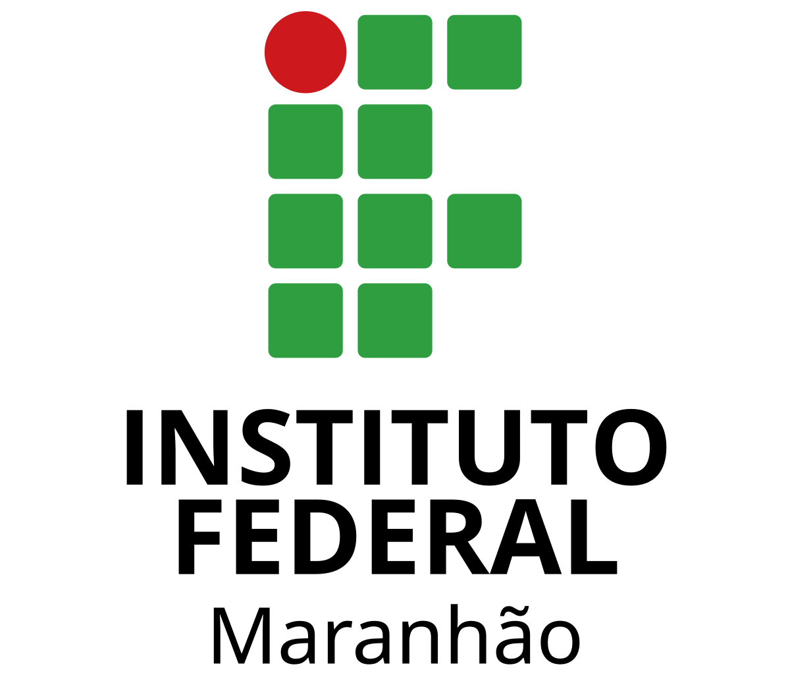
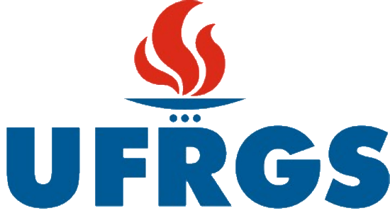
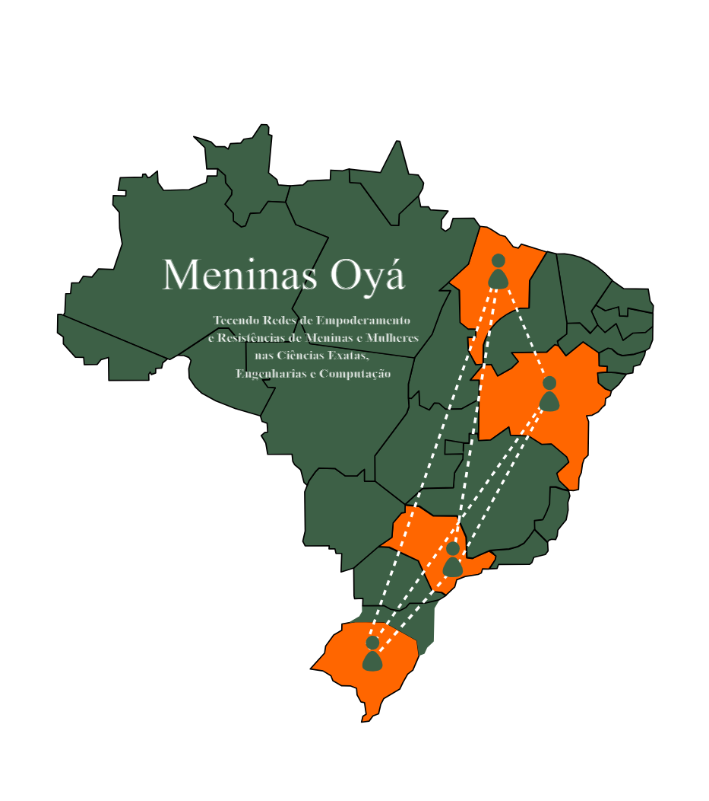

Parcerias
Trabalhamos junto com universidades, ONGs e coletivos feministas para expandir o impacto do projeto.



Nosso objetivo é constituir uma Rede de Apoio, Acolhimento e Empoderamento (RAAE) com uma abordagem multidisciplinar, oferecendo suporte ao acesso, à permanência e à ascensão de meninas e mulheres no Ensino Superior, especialmente nas áreas de Ciências Exatas, Engenharias e Computação. A iniciativa busca alcançar, em especial, aquelas oriundas de comunidades periféricas e/ou em situação de vulnerabilidade, promovendo a inclusão e o fortalecimento de talentos nas regiões Nordeste, Sudeste e Sul do país.

Estamos presentes nas regiões Nordeste, Sudeste e Sul do Brasil, apoiando meninas e mulheres de comunidades periféricas.
| Região | Estado | Instituição |
|---|---|---|
| Nordeste | Maranhão / Bahia |
Universidade Federal do Maranhão (UFMA) Instituto Federal de Educação, Ciência e Tecnologia do Maranhão (IFMA) Universidade Federal da Bahia (UFBA) Instituto Federal de Educação, Ciência e Tecnologia da Bahia (IFBA) |
| Sul | Rio Grande do Sul |
Universidade Federal de Santa Maria (UFSM) Universidade Federal do Rio Grande do Sul (UFRGS) |
| Sudeste | São Paulo |
Universidade Federal do ABC (UFABC) Faculdade de Tecnologia Professor Antônio Seabra (FATEC-LINS) |
Oficinas, rodas de conversa e mentorias abertas — confira nossa agenda!
Conheça a equipe por trás do projeto Meninas Oyá — mulheres engajadas na transformação social.
Trabalhamos junto com universidades, ONGs e coletivos feministas para expandir o impacto do projeto.


Siga-nos no Instagram:
Email: meninasoya@email.com